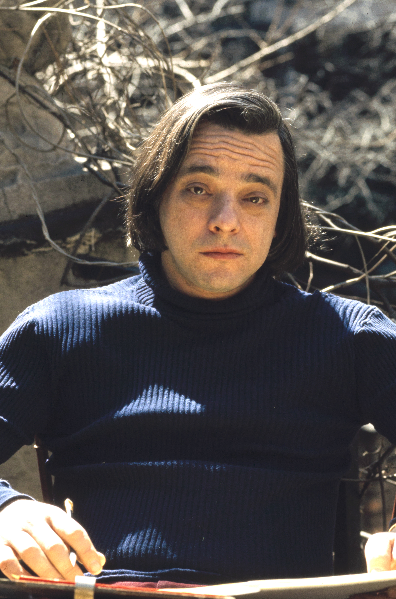
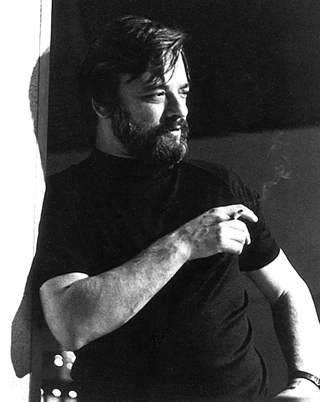

Stephen Sondheim · 1930–2021
Explore Sondheim
The most demanding mind in the American musical, taken apart and put back together — hear the motifs, move them with your hands, and trace one idea through an entire score.
Scroll ↓

He wrote shows you can take apart — so this is a place to do exactly that.
Two lenses run through every room. The compositional lens: how the music actually works — the motif, the meter, the dissonance. The lyrical lens: how the words work — the rhyme, the list, the right word in the right place. Everything here is playable, and built to be verified against the score.

The composer-lyricist
One man, seven scores, a changed art form.
Mentored by Oscar Hammerstein II, Sondheim spent six decades proving that a musical could think — that song could carry irony, ambivalence, structure, and dread without losing the tune. From Company to Sweeney Todd to Sunday in the Park with George, he made the form harder, stranger, and far more alive. This gallery is an attempt to show how.
The gallery
Seven rooms · two now showingThe throughline
One mind, seven scores.
Motivic transformation structures Sweeney, Merrily, and Into the Woods. Pastiche drives Assassins and colors Sunday. And one preoccupation — wanting versus having — runs beneath nearly all of it. A connections room will let you pull these threads across the whole canon.